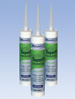
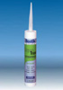
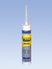
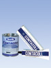
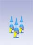
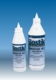
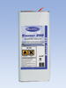
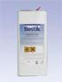
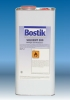

Материалы для промышленного применения
 Суперфикс Экстра
Суперфикс Экстра
Superfix Extra
Эластичный монтажный клей и герметик на основе MS - полимера. С пневматической насадкой для нанесения. Склеивание большинства строительных материалов при наружных и при внутренних работах, в частности – приклеивание плёнок при фасадных работах (например - бутиловых и EPDM -плёнок), приклеивание панелей и планок, склеивание деревянных и металлических конструкций, производство контейнеров. Очень высокая адгезия, в т.ч. к слегка влажным основаниям. Очень малая усадка, хорошая устойчивость к УФ излучению. НЕ содержит растворителей силикона и изоцианата. Пневматическая насадка обеспечивает возможность нанесения в любом положении, точное дозирование и минимальный расход. Отпадает необходимость использования монтажного пистолета.
Цвет: белый
Упаковка: коробка 12 туб 300 г с пневматической насадкой
Хранение: в сухом и прохладном месте.

СуперфиксSimson Superfix
Монтажный клей и герметик на основе MS - полимера.
Наклеивание большинства материалов на дерево, камень, бетон, металл и большинство синтетических материалов при наружных и при внутренних работах. Уплотнение стыков, соединительных и подвижных швов.
- без растворителей
- можно окрашивать / наносить покрытия
- эластичен в течение длительного времени
- очень высокая начальная адгезия
- исключительно высокая адгезия, в т. ч. на влажных основаниях
- устойчив к УФ излучению, к атмосферному воздействию, может использоваться в помещении и снаружи
- не вызывает коррозию при приклеивании металлов
Цвет: белый, серый, черный, бежевый, коричневый,
Упаковка: коробка 12 туб по 290 мл (435гр)
Хранение: в сухом и прохладном месте.

Супер ТрансSuper Trans
Монтажный клей и герметик на основе MS - полимера.
Наклеивание большинства материалов на дерево, камень, бетон, металл и большинство синтетических материалов при наружных и при внутренних работах. Уплотнение стыков, соединительных и подвижных швов.
Не пригоден для склеивания/герметизации искусственного и природного камня.
Эластичен в течение длительного времени, обладает высокой адгезией, может применяться на влажных основах.
Цвет: прозрачный
Упаковка: туба 290 мл
Бостик 2750 MS
Bostik 2750 MS
1-компонентный гибридный клей и герметик.
Для эластичного приклеивания различных материалов при внутренних и наружных работах. Предназначен для приклеивания различных пленок при фасадных работах (например: бутиловых и EPDM пленок), для приклеивания панелей, при изготовлении деревянных, металлоконструкций и в производстве контейнеров.
Широкий диапазон склеиваемых материалов. Не содержит растворителей, без запаха. Устойчив к воздействию УФ- излучения, атмосферы и химикатов. Отвердевание под воздействием влаги. Эластичный.
Цвет: белый, черный
Упаковка: туба 290 мл
Бостик Штюц
Bostik Stutzenklebstoff
Продукт: Содержащий растворители 1-компонентный полиуретановый клей для приклеивания металлов к дереву, для склеивания минеральных плат и жесткого пенопласта (за исключением полистирола). Область применения: Для использования для монтажа в промышленности, ремесле и при производстве сэндвич панелей. Специальные области использования: приклеивание опор двойных полов на различные основы, производство сэндвич элементов с наполнением из минеральной ваты, стекловаты, ДСП или пенопласта (например: полиуретан и ПВХ) и оболочкой из дерева, пластмассы или металла (например: алюминий или оцинкованная сталь) для отделочных работ в кораблях, жилых автоприцепах, автотранспорте, контейнерах, сборных домах, дверях.
Бостик 960
Bostik 960
Контактный клей для ламината. Также для PAD-систем.
 Клей Монтажный D
Клей Монтажный D
Montagekleber D
Монтажный дисперсионный клей
- не содержит растворителей
- универсального применения
- заполняет зазоры и герметизирует
Для внутренних работ. Пастозный, заполняющий монтажный клей с хорошей начальной адгезией. Предназначен для приклеивания декоративных реек и декоративных облицовок из жесткого пенопласта на основе полиуретана, стиропора или жесткого ПВХ, изоляционных плит из жесткого или мягкого пенопласта, включая стиропор(Styropor). Для плит из стекловолокна и минерального волокна, ДСП, плит из гипсокартона, элементов из дерева и пластмассы, дверных рам из дерева, плинтусов, керамической плитки, подоконников и т.п. GISCODE D 1
Расход: зависит от применения.
Упаковка: картуш 380 гр.

Клей Монтажный NMontagekleber N
Монтажный клей на основе полихлоропрена
- обладает высокой начальной адгезией
- быстро затвердевает
- эластичный
- заполняет зазоры
Для внутренних работ. Пастозный, заполняющий монтажный клей с повышенной начальной адгезией, предназначен для приклеивания плинтусов (Kernsockelleisten), декоративных реек и декоративных облицовок из жесткого пенопласта на основе полиуретана, изоляционных плит из жесткого пенопласта (кроме стиропора и т.п.). Для ДСП, гипсокартонных плит, элементов из дерева и пластмассы, дверных рам из дерева, плит из стекловолокна и минерального волокна, металла, керамической плитки, подоконников и т.п. GISCODE S 1
Расход: зависит от применения.
Упаковка: картуш 380 гр.
Бостик 1475
Bostik 1475
Клей на основе нитрилкаучука. Для приклеивания термо - и дуропластов, а также дерева и металла. Хорошая устойчивость к химическим воздействиям. Возможно также использование с Боскодар AF 8650 в качестве второго компонента.
Боскодар AF 8650
Boscodur AF 8650
Отвердитель для Бостик 1475

КонтаколContacoll
Специальный контактный клей
- исключительно малое время образования пленки
- исключительно высокая начальная адгезия
- высокая конечная прочность склеивания
Предназначен для склеивания деревянных элементов с плитами из слоистого пластика (ламината), с металлом, стеклом, керамикой. Для закрепления накладок, облицовки краев и закруглений. Для склеивания кожи, резины, войлока, пробки, непластифицированного ПВХ, пеноматералов (за исключением пенополистиролов, таких как стиропор) и т.п.
Для температуроустойчивого склеивания до + 120 °C следует использовать Bostik 1513. GISCODE S 1
Зубчатый шпатель - Расход: кисть или А4 - прим. 300 г/ м.кв., при двухстороннем нанесении
Упаковка: тюбик 125 гр., банка 320 гр., 690 гр., 4,5 кг , 9 кг
Бостик 1513
Bostik 1513
Контактный клей на полихлоропреновой основе. Для приклеивания кожи, войлока, текстиля, пробки, фанеры и т.д. со сталью, алюминием, полиэфиром, камнем, бетоном, деревом, ДСП и т.д. Многоцелевой, высокопрочный. Обладает хорошей тепловой устойчивостью до 120 0С.
Бостик 1517 R
Bostik 1517 R
Контактный клей на полихлоропреновой основе. 1-компонентный, тепло - и погодоустойчивый специальный клей для приклеивания NeoprenR, пенорезины, кожи, холста, твердого ПВХ, натурального каучука, бутилкаучука, полиуретана, жесткого и мягкого пенопласта, VulkollanR, плит слоистого пластика друг с другом, а также с деревом алюминием, сталью и асбестоцементными плитами. Непригоден для StyroporR, полиэтилена и PTFE.
Грунтовка Бостик 9252
Bostik Primer 9252
Грунтовка для улучшения адгезии к металлу, в особенности для полихлоропреновых клеев.
Бостик 2402
Bostik 2402
2-компонентный контактный клей на полихлоропреновой основе. Для склеивания пластмасс, а также для приклеивания их к дереву и металлу. Использовать совместно с Боскодар D.
Боскодар D
Boscodur D
Отвердитель для Бостик 2402
Бостик 1777
Bostik 1777
Клей для тормозных колодок. Термореактивный 1-компонентный специальный клей с высокой температурной устойчивостью и устойчивостью к сдвигу. Для склеивания накладок с тормозными колодками и металла с металлом. Жароустойчивый, может, наносится кистью.
Снят с производства.
Бостик 2225
Bostik 2225
Контактный клей на основе полиэфира. Для склеивания пластмасс, а также для их приклеивания к дереву и металлу. Может использоваться также с Боскодар P8659 как второй компонент.
Боскодар P 8659
Boscodur P 8659
Отвердитель для Бостик 2225
Бостик 7431
Bostik 7431
Моментально схватывающийся клей на основе цианакрилата с вязкостью 1-5 мПа*сек.

Бостик 7432Bostik 7432
Клей для ремонтных работ
- универсального применения
- моментально затвердевает
Клей на основе цианакрилата, предназначен для склеивания пластмасс, резины и металлов. Также может применяться для приклеивания эластичных напольных покрытий при проведении ремонтных работ.
Упаковка: тюбик 12 гр.
Бостик 7433
Bostik 7433
Моментально схватывающийся клей на основе цианакрилата с вязкостью 290-320 мПа*сек
Бостик 7434
Bostik 7434
Моментально схватывающийся клей на основе цианакрилата с вязкостью 1200-1700 мПа*сек.
Бостик 9510 PAD
Bostik 9510 PAD
Пенопластовая лента, пропитанная полихлоропреновым клеем, обладающим высокой устойчивостью к старению.
Поглощает вибрацию между различными материалами и одновременно обладает шумоизоляционным действием. Служит прокладкой и делает возможным циркуляцию воздуха между несущей поверхностью и приклеенным предметом. Приклеивание осуществляется специальным клеем Бостик 960.

Нибовуд PK 3Nibowood PK 3
Водостойкий клей для дерева и паркета
- не содержит растворителей
- хорошо растекается
- заполняет щели
- при высыхании становится прозрачным
- обладает долгой жизнеспособностью
Поливинилацетатный белый клей (PVAc- Wei ß leim). Относится к классу нагрузки D 3 по нормам EN 204. Предназначен для водостойкого склеивания пазов и швов в готовом паркете, ламинате и ДСП. GISCODE D 1
Расход: 5г / погонный метр
Упаковка: 550 гр., 1100 гр., канистра 10 кг
Престик
Prestik Knetdichtung
Престик AE
Prestik AE
Бостик BLU TACK
Bostik BLU TACK
Пластичная масса (типа пластилина) для фиксации и закрепления.
Звукоизоляционные панели
Antidrohnplatte
Самоклеящиеся звукоизоляционные пластины на основе битума.
Для грузового транспорта, ворот гаражей, подоконников и т.д.
Термогрип 6351
Thermogrip 6351
<Стик> клея-расплава
Высококачественный <стик> для пистолета клеев-расплавов, например Бостик TG 4, для различных материалов.
Термогрип 9953
Thermogrip 9953
<Стик> клея-расплава
Недорогой <стик> для пистолета клеев-расплавов, например Бостик TG 4, для различных материалов.

Растворитель 250Solvent 250
Разбавитель и очиститель.
Для чистки инструментов и поверхностей, а также для разбавления клеев на основе искусственных смол, например - NIBOFLOOR PK 40, NIBOFLOOR PK 42.
Упаковка: банка 6 л
Растворитель 270
Solvent 270
Разбавитель и очиститель.
Разбавитель для клеев на основе нитрилкаучука и очиститель для инструмента и наружных поверхностей.

Растворитель 280Solvent 280
Разбавитель и очиститель.
Разбавитель для растворяемых бензином клеев и очиститель для остатков бутила.

Растворитель 300Solvent 300
Растворитель (разбавитель) и чистящее средствоПредназначен для контактных клеев на основе полихлоропрена. Используется для чистки инструмента и для удаления остатков клея, а также для обезжиривания поверхностей и для удаления разделительных слоев.
Расход: зависит от применения.
Упаковка: банка 1 л, ведро 6 л, 12 л